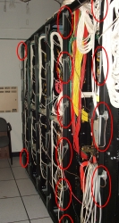
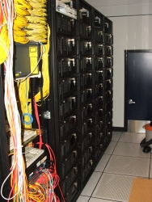
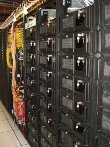

Emulab Tutorial - Using Wireless Networking
Some Emulab nodes contain 802.11 a/b/g wifi interfaces (Atheros 5212 chipset),
and are scattered around at various locations in a large building. To find out where they
are located and what their node IDs are, see the wireless floormaps page.
When you click on one of the colored dots, you will be taken to a page
describing the node and what type of interfaces the node has installed
in it.
In addition to the nodes deployed throughout the building, we've also
concentrated a subset of them in our machine room. 36 of the pc600s now have
802.11 a/b/g interfaces, also with the Atheros 5212 chipset. Each has an
external antenna deployed on the backs of the racks containing the pc600s. To
find out which nodes are where, look at the floormaps
for this sub-cluster. For connectivity, antenna positions, and related
information, see the Environmental Information
subsection of this document.
Before using a wireless network interface in an experiment,
please read the Wireless Acceptable Use
Policy regarding wireless interfaces.
This document is broken up into the following sections:
- Wireless Acceptable Use Policy
- Creating an Experiment with Wireless Nodes
- Wireless Link Configuration Settings
- Dynamically Configuring Wireless Links
- Advanced Dynamic Link Configuration
- Choosing Physical Nodes
- Environment and Deployment Information
By using our wireless nodes, you agree to be bound by this AUP.
- Receiving:
You may listen to and monitor anything you like. If you happen
to observe "private" information such as plaintext Web passwords,
you will not exploit that information, and you will take
care not to let it leak out publicly, e.g., in log files.
- Transmitting (1):
Do not transmit on channels that another experiment on the
testbed is using, unless it's your own. You can find out which
channels are currently in use by looking at the top of the wireless floormap.
Where possible, choose channels that have the least frequency overlap
with other experiments. (channel/freq table coming.)
- Transmitting (2):
Do not flood a wireless network with non-responsive traffic for
any significant period of time. The following channels are
"production networks" used by others at this location, so are
more restricted. You may not send "large" amounts of traffic on
them, and may send only low rates of non-responsive traffic.
| Protocol | Channels |
|---|
| A | 36, 38, 45, 52, 56, 60, 64 |
| B/G | 1, 3, 5, 6, 7, 9, 11 |
- Question and Exceptions: send to
Testbed Ops
if you're not sure, or want an exception.
To use a wireless network in an experiment, you must provide a few Emulab
specific NS directives in your NS file, which are illustrated in the
following small example:
source tb_compat.tcl
set ns [new Simulator]
# Allocate the nodes. Their "wifi-ness" is determined later,
# by the type of networks you request to be set up on them.
set nodew1 [$ns node]
set nodew2 [$ns node]
set nodew3 [$ns node]
set node4 [$ns node]
# A wireless lan connecting the first three nodes.
set lan0 [$ns make-lan "$nodew1 $nodew2 $nodew3" 54Mb 0ms]
# A regular duplex link from a wireless-capable node to a plain node.
set link0 [$ns duplex-link $nodew1 $node4 100Mb 0ms DropTail]
# Choose the wireless lan protocol.
tb-set-lan-protocol $lan0 "80211g"
# Set an access point. This node becomes the access point;
# others in the LAN become stations of it. You can also set other
# modes for your LAN, such as Adhoc mode.
tb-set-lan-accesspoint $lan0 $nodew1
# Choose some other settings.
tb-set-lan-setting $lan0 "channel" 2
tb-set-node-lan-setting $lan0 $nodew1 "txpower" "auto"
# Select a wireless-capable image (i.e., FC4-WIRELESS)
# Let the other node default to RHL-STD (currently 9.0).
tb-set-node-os $nodew1 FC4-WIRELESS
tb-set-node-os $nodew2 FC4-WIRELESS
tb-set-node-os $nodew3 FC4-WIRELESS
# Turn on static routing.
$ns rtproto Static
$ns run
As mentioned above, there are two different node types with wireless
interfaces. The pc3000w
nodes are deployed in a wide range around our building. We have also added a
single wireless interface to 36 of the
pc600s. If you wish to include only pc3000w nodes
in your experiment, for each node, set its hardware type:
set nodew1 [$ns node]
tb-set-hardware $nodew1 pc3000w
set nodew2 [$ns node]
tb-set-hardware $nodew2 pc3000w
set nodew3 [$ns node]
tb-set-hardware $nodew3 pc3000w
set nodew1 [$ns node]
$nodew1 add-desire pc600wifi 1.0
set nodew2 [$ns node]
$nodew2 add-desire pc600wifi 1.0
set nodew3 [$ns node]
$nodew3 add-desire pc600wifi 1.0
In this example, we created a simple infrastructure mode LAN with a single
access point. You can also place LANs in Adhoc mode, for instance. If you
wish to do this, do not specify an access point with the
tb-set-lan-accesspoint command. Instead, set the mode for the LAN
explicitly:
tb-set-lan-setting $lan0 "mode" "adhoc"
A few additional points should be noted:
- lan0 is created with standard make-lan
directive, but with a bandwidth that reflects the typical speed of a
wireless link (54Mb for 80211a and 80211g, 11Mb for 80211b). Note that
you may not use duplex links of wireless interfaces; just LANs.
We assign each LAN a unique ssid.
- After you create the LAN, choose the protocol for the LAN
with the tb-set-lan-protocol directive. Currently, you can
set the protocol to one of 80211a, 80211b, or 80211g.. If you
fail to set the protocol, the LAN will consist of wired links, most
likely with delay nodes inserted!
- link0 is a plain duplex link. You may create plain links
as long as the nodes have enough wired interfaces. If you try to
create an experiment that uses more links (wired or wireless) on a
node than are available in Emulab, the experiment will fail to map.
Of the current 54 wifi nodes, the 18 pc3000w wifi nodes
(pcwf1-18) contain two wifi cards and one wired experimental interface
and the 36 pc600 (all pc600s except pc8,pc11,pc30,pc38) nodes contain one wifi card and four
experimental interfaces.
- In the example above, we let Emulab decide what wireless nodes to
use for the LAN. This is not an ideal approach, as Emulab does
not currently track the connectivity of nodes, and so might pick
a set of nodes (randomly) that cannot communicate with each
other. See the section below on choosing
your nodes for more information on how to overcome this
problem.
- You will want to put your LAN or individual nodes in a specific operating
mode. In the example above, we used the tb-set-lan-accesspoint
command to specify that nodew1 be the access point, and all other
nodes become stations connected to that node. Rather than using dedicated
access points, Emulab's implementation of wireless LANs uses the
interface's capability to become an access point for a LAN. The node that
is chosen to be the access point should obviously be within range of all
of the nodes in the LAN. There is currently no automated mechanism to pick
the access point for you, but one is planned for the future. If you wish
to put your LAN into another operating mode (i.e., Adhoc), you must
specify this via the tb-set-lan-setting command. In the above
example, you could add:
tb-set-lan-setting $lan0 "mode" "adhoc"
For more information on wireless modes, see the section of this document
entitled Wireless Link Configuration Settings.
- Wireless LANs allow a number of configuration parameters to be
specified, either for the LAN as a whole, or for individual members of
a LAN. There are two Emulab specific directives that you can use;
tb-set-lan-setting sets a configuration parameter for the
entire LAN. In the example above, we set the channel to be used for
the LAN to channel five. Per-node settings can be specified with the
tb-set-node-lan-setting directive. In the example, we set the
transmit power for nodew1 to auto; all other nodes will
default to an interface specific setting.
- You must use Fedora Core 4 or RedHat 9.0 to take advantage of wireless
interfaces. Be sure to set the OSID for all of your wireless nodes to
FC4-WIRELESS or RHL90-WIRELESS. FC4-WIRELESS
contains a 2.6.x kernel and very recent madwifi drivers;
RHL90-WIRELESS contains a 2.4.x kernel. We strongly
suggest you use FC4-WIRELESS unless you specifically require
a 2.4.x Linux kernel.
Numerous interface settings are possible using tb-set-lan-setting
and tb-set-node-lan-setting. These mostly correspond to options
that are available using the iwconfig, iwpriv, and
wlanconfig commands on Fedora Core 4 or Redhat 9.0.
For iwconfig-specific options, the format of the value you provide for
the option must be acceptable to iwconfig.
At some point in the future we hope to make this more
explicit so that know exactly what options are available each type of card, and
what their legal values are. For now you will want to be familiar with
iwconfig and the madwifi drivers
for Atheros chipsets. Here is a guide to what you can currently specify:
- mode: Set the mode for the LAN or interface. The mode argument
may be one of Master, Managed, Adhoc, or
Monitor. Master makes the interface become an access
point (note that you probably do not want to set an entire LAN in
Master mode). Managed makes the LAN or interface become
a station which connects to an access point, if one exists.
Adhoc puts the interface or LAN into ad-hoc mode.
Monitor puts the interface or LAN into monitor mode, which may be
useful for network sniffing. Note that the Adhoc and
Monitor values can be given when calling
tb-set-lan-setting, but you probably only want to pass
Master or Managed values to
tb-set-node-lan-setting. In fact, you can more easily set
nodes to be access points by calling tb-set-lan-accesspoint
for a wireless LAN; in this way, the node you specify will be the access
point and all others in the LAN will become stations of it.
- freq: Set the channel for the LAN to either a
channel number or a frequency. If you set the value to an integer
less than 1000, you are setting a channel number; if you set the value to
an integer greater than 1000, or to a floating point number with a unit
(i.e., 2.437GHz), you are setting a frequency directly.
If you do not set the channel one will be choosen for you, and that's
probably just as bad as setting it yourself without knowing what other
people are using!
- rate: Some interfaces support setting a bit rate
different then the default. The default is to tell the interface
to use "auto" mode (varies the rate according to RF conditions),
but you can specify a specific rate for either the entire LAN or
for just one node. The value should be in bits per second with no
units, or a floating point value with a unit (i.e., 11M, 54M). See the
iwconfig man page for more details on the format of this option.
- txpower: Some interfaces support setting the transmit
power to something different then the default. The default is to
tell the interface to use "auto" mode. See the iwconfig man page
for more details on the format of this option. Not all interfaces
support this option.
- sens: Some interfaces support setting the sens
parameter (i.e., sensitivity)
to something different then the default. The default is to
tell the interface to use "auto" mode. See the iwconfig man page
for more details on the format of this option. Not all interfaces
support this option.
- rts: This parameter can be set to enable RTS/CTS. From the
iwconfig man page: "This parameter sets the size of the smallest
packet for which the node sends RTS; a value equal to the maximum packet
size disables the mechanism." You can also set the value to "auto" or
"off"; note that the default is "off" on our hardware. Setting this
parameter may not have the intended result on all hardware.
- frag: Any IP packets larger than the value of this parameter
will be split into multiple packets. The value should be specified in
bytes. You can also set it to "auto" or "off".
After your experiment is swapped in, the above settings (including the
accesspoint) can be changed on the fly, using either the
link_config script on users.emulab.net, or with the
XMLRPC interface. For example, if you want to change the accesspoint
of a LAN, first determine the MAC address (dotted or undotted notation
is fine) of the interface you want to be the accesspoint, and then use
link_config:
link_config myproj myexp lan0 accesspoint=00:09:5B:94:26:AF
sshxmlrpc_client.py link_config proj=myproj exp=myexp
link=lan0 "params={'accesspoint': '00:09:5B:94:26:AF'}"
If you want to change your LAN to adhoc mode, you can simply run
link_config from users.emulab.net:
link_config myproj myexp lan0 mode=adhoc
sshxmlrpc_client.py link_config proj=myproj exp=myexp
link=lan0 "params={'mode': 'adhoc'}"
You may also change the settings for an individual node in a wireless
LAN (although in some cases this could make the LAN unusable if you
were to change a setting on just a single node). To do this, use the
-s option to link_config or the src argument to the
XMLRPC interface:
link_config -s nodew1 myproj myexp lan0 txpower=50
sshxmlrpc_client.py link_config proj=myproj exp=myexp
src=nodew1 link=lan0 "params={'txpower': 50}"
To enable and disable the interface for individual
nodes on the LAN:
link_config -s nodew1 myproj myexp lan0 enable=no
link_config -s nodew1 myproj myexp lan0 enable=yes
sshxmlrpc_client.py link_config proj=myproj exp=myexp
src=nodew1 link=lan0 "params={'enable': 'no'}"
Note this currently operates by bringing the interface up/down with
the ifconfig command.
The goal of this section is to provide extra functionality via
link_config so that you can work around issues encountered with the
combination of Linux wireless support and the madwifi drivers.
One "problem" that arises for wireless interfaces with
Atheros chipsets due to the combination of the generic Linux wireless tools and
the madwifi drivers, is that to
change modes (i.e., from Managed to Adhoc), you must actually
remove the athX device, change the mode with wlanconfig, and
finally re-create the athX device. This effectively removes all
current iwconfig settings of the device and resets them to defaults.
Consequently, if you want to keep your settings without having to respecify
them as parameters to the command line, you can pass a flag (set the "remember"
parameter to "1") to link_config that will do this for you. When the
"remember" flag is set, the current state of the device to be reconfigured is
captured via iwconfig. Any parameters you specify along with
"remember" override the current settings. If the device is currently down and
we cannot obtain current settings via iwconfig, the original Emulab
configuration from your NS file is used.
Important Note: Using the "remember" flag can be dangerous. For
instance, if your device is currently operating in 80211b on channel 4, and you
try to switch it to 80211a without specifying a new channel in the 5GHz
spectrum, your kernel may panic (this has been observed on our
RHL90-WIRELESS image with the latest 2.4.x kernel and madwifi
drivers). So, be careful!
In other situations, the Atheros/wireless tools combination will simply not
execute your commands. For instance, sometimes you cannot switch from one
protocol to another (i.e., 80211g to 80211b); iwpriv
will fail. One solution to this problem is to remove the Atheros and wireless
kernel modules, re-insert them, and then run the configuration commands. If
you find that some of your dynamic configuration commands fail, try setting the
"resetkmod" parameter to "1" when calling link_config. A less drastic
approach that sometimes works is simply using wlanconfig to destroy
the athX device and re-create it with the new settings. You can try
this by setting the "resetwlan" parameter to "1" when calling
link_config. Important Note: Removing and re-inserting kernel
modules can have unintended side effects. For instance, if you have multiple
Atheros interfaces enabled on your node, removing the modules will remove any
other athX devices you may have configured (and it might even panic
your kernel). Unfortunately, at this time, link_config cannot work
around this possibility.
As mentioned above, Emulab's default mapping of nodes in your virtual
topology, to physical nodes with wireless interfaces, does not
currently take into account physical connectivity (walls, floors,
electrical conduits, etc. all conspire to make it possible that two
wireless nodes 50 feet apart from each other will not actually be able to
communicate with each other). We are planning to add this
capability in the future, but in the meantime it is mostly up to you
to choose nodes that make sense for your topology. You might end up
having to make some trial and error runs, trying to find the right
set of nodes (including setting the accesspoint to different nodes in
a LAN) before you get a working set.
To assist in this chore there are two Emulab specific NS extensions
you can use in your NS file. The first approach is to use the
tb-use-physnaming extension.
tb-use-physnaming 1
set pc222 [$ns node]
set pc223 [$ns node]
set pc224 [$ns node]
set nodew1 [$ns node]
set nodew2 [$ns node]
set nodew3 [$ns node]
tb-fix-node $nodew1 pc222
tb-fix-node $nodew2 pc223
tb-fix-node $nodew3 pc224
Hardware Details
The pc3000w Netgear WAG311
cards, which use the Atheros 5212 802.11a/b/g chipset. Each pc600 node
contains a single
D-Link DWL-AG530, which also use the Atheros 5212 chipset. This chipset is
quite flexible since most of the 802.11 MAC layer is handled in software.
Emulab provides the standard madwifi Atheros driver by default, but there are
alternatives such as the madwifi stripped driver from the MIT roofnet project
and SoftMAC from the Universtiy of Colorado at Boulder. Here are some useful
links:
Due to the dense nature of the pc600 mini-cluster, we describe some of its
properties and deployment characteristics in detail in this section. You can
view a map of the deployment
here.
The external antennas for each wireless interface in the pc600s are deployed in
a 6 x 6 grid on the back side of the racks housing the pc600s and pc850s. Each
antenna is currently pointed straight down towards the floor. The
grid is 300cm x 224cm. All nodes in the grid are easily able to communicate
with each another; the interesting nature of this grid becomes more evident
when many nodes attempt to send packets at the same time. Because the nodes
are deployed in our machine room, the environment is hostile, with many other
racks, machines, conduits, and other items, conspiring to provide various types
of signal interference.
To give you an idea of what you might expect when many nodes in proximity are
sending packets at the same time, we ran some simple tests. In this
experiment, all nodes are placed in ad-hoc mode in a single LAN, and send
packets all at once to the broadcast address in their subnet. Each node sends
1000 1024-byte packets at a rate of 10pps. We then do this iteratively over
all channels in each of a, b, and g modes. The results are presented in terms
of the percentage of broadcast packets received at each node. The Aggregate
Statistics table simply aggregates all statistics gathered from each 802.11
mode across all receivers.
| Aggregate Statistics |
| Mode |
min |
mean |
max |
stddev |
var |
| 802.11 a |
0.10 |
65.21 |
99.40 |
15.69 |
246.27 |
| 802.11 b |
2.10 |
25.19 |
91.10 |
15.01 |
225.25 |
| 802.11 g |
0.30 |
26.04 |
83.10 |
15.84 |
250.99 |
Finally, here are some pictures of the pc600 mini-cluster. On the back of the
racks, you can see the antennas in the 6 x 6, 36-node grid. Some antennas are
outlined to make them easier to see; however, once you find the corners of the
grid, it becomes easier to spot them all.




{kind=link}
{kind=link}

{kind=link}
{kind=link}